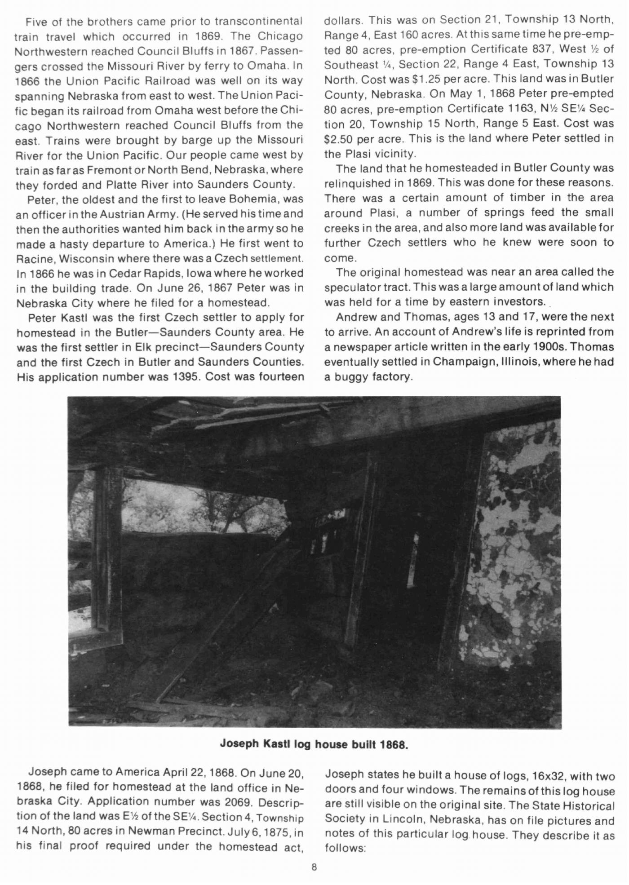

The book · The Kastls: from Bohemia to America
Page 8 Joseph Kastl log house built 1868.


Transcription
Five of the brothers came prior to transcontinental train travel which occurred in 1869. The Chicago Northwestern reached Council Bluffs in 1867. Passengers crossed the Missouri River by ferry to Omaha. In 1866 the Union Pacific Railroad was well on its way spanning Nebraska from east to west. The Union Pacific began its railroad from Omaha west before the Chicago Northwestern reached Council Bluffs from the east. Trains were brought by barge up the Missouri River for the Union Pacific. Our people came west by train as far as Fremont or North Bend, Nebraska, where they forded and Platte River into Saunders County.
Peter, the oldest and the first to leave Bohemia, was an officer in the Austrian Army. (He served his time and then the authorities wanted him back in the army so he made a hasty departure to America.) He first went to Racine, Wisconsin where there was a Czech settlement. In 1866 he was in Cedar Rapids, Iowa where he worked in the building trade. On June 26, 1867 Peter was in Nebraska City where he filed for a homestead.
Peter Kastl was the first Czech settler to apply for homestead in the Butler—Saunders County area. He was the first settler in Elk precinct—Saunders County and the first Czech in Butler and Saunders Counties. His application number was 1395. Cost was fourteen dollars. This was on Section 21, Township 13 North, Range 4, East 160 acres. At this same time he pre-empted 80 acres, pre-emption Certificate 837, West ½ of Southeast ¼, Section 22, Range 4 East, Township 13 North. Cost was $1.25 per acre. This land was in Butler County, Nebraska. On May 1, 1868 Peter pre-empted 80 acres, pre-emption Certificate 1163, N½ SE¼ Section 20, Township 15 North, Range 5 East. Cost was $2.50 per acre. This is the land where Peter settled in the Plasi vicinity.
The land that he homesteaded in Butler County was relinquished in 1869. This was done for these reasons. There was a certain amount of timber in the area around Plasi, a number of springs feed the small creeks in the area, and also more land was available for further Czech settlers who he knew were soon to come.
The original homestead was near an area called the speculator tract. This was a large amount of land which was held for a time by eastern investors.
Andrew and Thomas, ages 13 and 17, were the next to arrive. An account of Andrew's life is reprinted from a newspaper article written in the early 1900s. Thomas eventually settled in Champaign, Illinois, where he had a buggy factory.

Joseph came to America April 22, 1868. On June 20, 1868, he filed for homestead at the land office in Nebraska City. Application number was 2069. Description of the land was E½ of the SE¼. Section 4, Township 14 North, 80 acres in Newman Precinct. July 6, 1875, in his final proof required under the homestead act, Joseph states he built a house of logs, 16x32, with two doors and four windows. The remains of this log house are still visible on the original site. The State Historical Society in Lincoln, Nebraska, has on file pictures and notes of this particular log house. They describe it as follows:
People from the line of descent on this page
- Josef Kastl 1840–1921
- Peter Kastl 1827/1828–1903
- Thomas Kastl 1850–1904
Transcriber’s notes
Same chapter as page 7 (s009), 'The Kastls: from Bohemia to America', but the page starts a new paragraph (no heading). Layout: two text columns, then a wide photo with caption, then two more short text columns; the last sentence ('They describe it as follows:') runs on to page 9. Fractions printed with ½/¼ glyphs kept. 'they forded and Platte River' as printed.